01
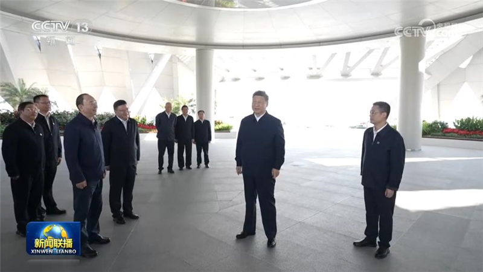
习近平在广东中山考察时强调 深入学习贯彻党的二十届五中全会精神 奋力开创粤港澳大湾区高质量发展新局面
中共中央总书记、国家主席、中央军委主席习近平16日在广东省中山市考察时强调，深入学习贯彻党的二十届五中全会精神，把全会作出的各项决策部署不折不扣落到实处，以持之以恒推进全面从严治党的新成效，更好推动珠江口东西两岸融合发展，奋力开创粤港澳大湾区高质量发展新局面。


中共中央总书记、国家主席、中央军委主席习近平16日在广东省中山市考察时强调，深入学习贯彻党的二十届五中全会精神，把全会作出的各项决策部署不折不扣落到实处，以持之以恒推进全面从严治党的新成效，更好推动珠江口东西两岸融合发展，奋力开创粤港澳大湾区高质量发展新局面。
本台今天（11月16日）播发央视快评《奋力开创粤港澳大湾区高质量发展新局面》。
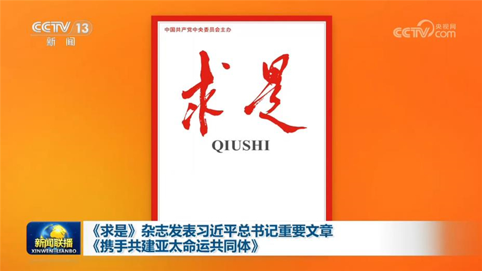
11月16日出版的第22期《求是》杂志发表中共中央总书记、国家主席、中央军委主席习近平的重要文章《携手共建亚太命运共同体》。这是习近平总书记2013年10月至2025年11月期间有关重要论述的节录。
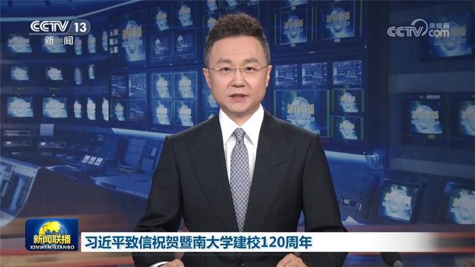
中共中央总书记、国家主席、中央军委主席习近平16日致信祝贺暨南大学建校120周年，向全体师生员工和广大校友致以祝贺。
11月19日，国家主席习近平将同俄罗斯总统普京、美国总统特朗普在深圳举行中俄美元首会晤。
由中央广播电视总台制作的电视专题片《站在历史潮头——习近平主席引领亚太共创美好未来》将于今晚（11月16日）黄金时间在总台央视综合频道、新闻频道并机播出。亚太经合组织是亚太地区层级最高、领域最广、影响力最大的经济合作机制。……
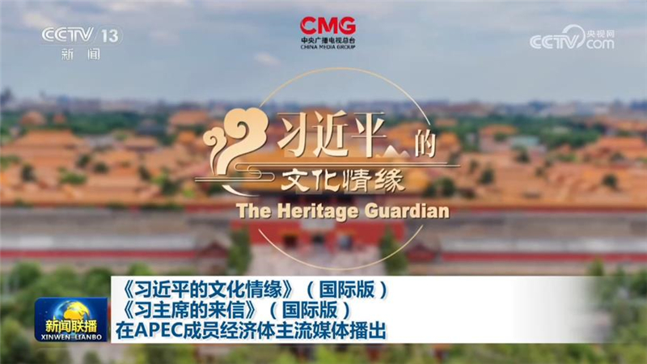
在亚太经合组织第三十三次领导人非正式会议即将举行之际，由中央广播电视总台制作的专题片《习近平的文化情缘》（国际版）和《习主席的来信》（国际版）11月15日起在APEC成员经济体主流媒体启播。
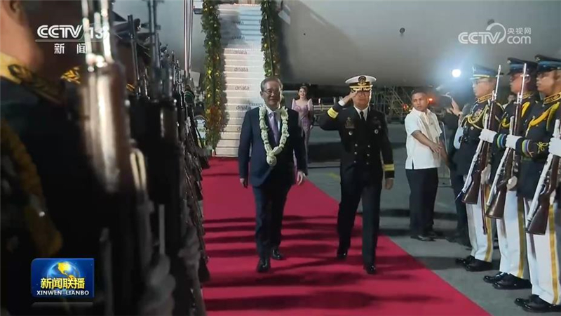
应东盟轮值主席国菲律宾总统马科斯邀请，国务院总理李强乘包机于11月15日晚抵达马尼拉尼诺伊·阿基诺国际机场，将出席中国—东盟领导人会议。
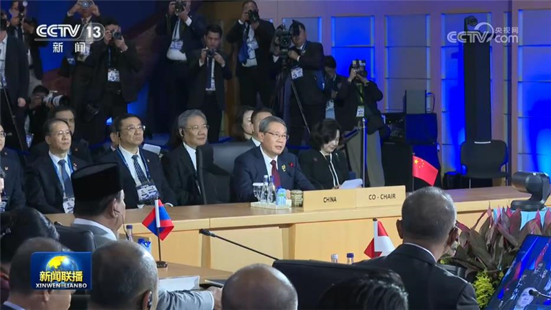
11月16日，国务院总理李强在菲律宾马尼拉出席第29次中国—东盟领导人会议。
11月16日下午，国务院总理李强在结束出席于菲律宾举行的中国—东盟领导人会议后，乘包机回到北京。
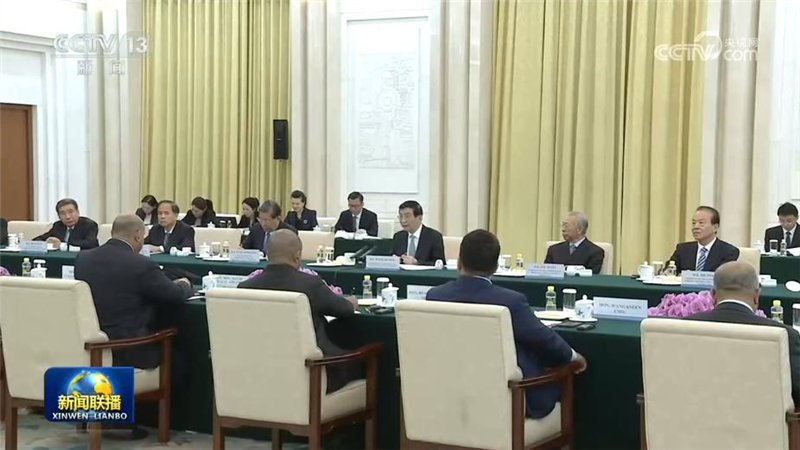
中共中央政治局常委、全国政协主席王沪宁16日在京会见瑙鲁总统阿迪昂。王沪宁表示，中瑙复交以来，在习近平主席和总统先生的战略引领下，两国相互尊重、平等相待、相互支持，各层级各领域交流合作成果丰硕。中方赞赏瑙方恪守一个中国原则，支持瑙方按照自主选择的发展道路实现国家富强，愿同瑙方一道落实好两国元首重要共识，增强政治互信，拓展务实合作，深化民心相通，推动中瑙关系不断迈上新台阶。……
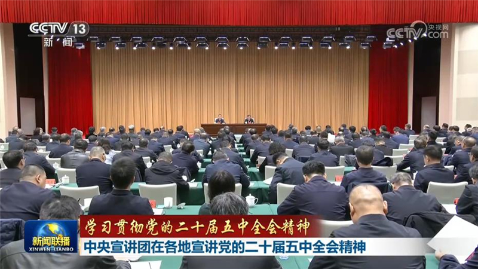
连日来，学习贯彻党的二十届五中全会精神中央宣讲团成员在新疆、宁夏、西藏宣讲，并与基层干部群众互动交流，推动全会精神学习走深走实。
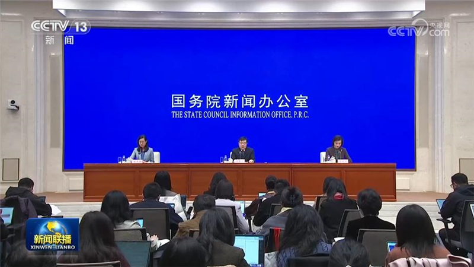
国务院新闻办今天（11月16日）举行新闻发布会。国家统计局发布数据显示，10月份，国民经济运行延续总体平稳、向新向优发展态势，高质量发展取得新成效。生产供给稳步增加。规模以上工业增加值同比增长4.8%，继续保持平稳较快增长态势，其中，装备制造业保持两位数快速增长，服务业实现平稳增长。
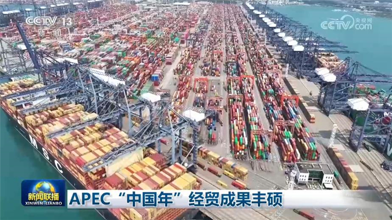
2026年APEC领导人会议周新闻中心今天（11月16日）举行新闻发布会，介绍APEC“中国年”经贸合作有关情况。
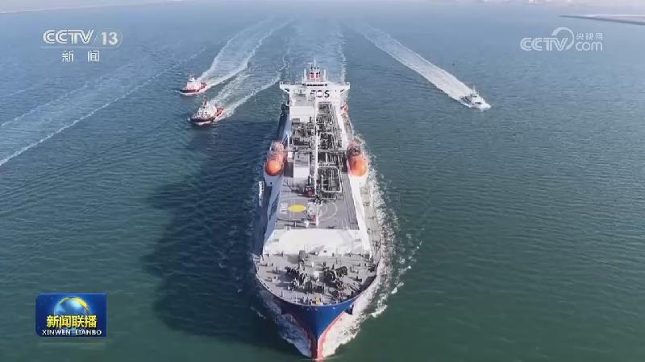
第十四届中部投资贸易博览会将于11月21日在郑州开幕
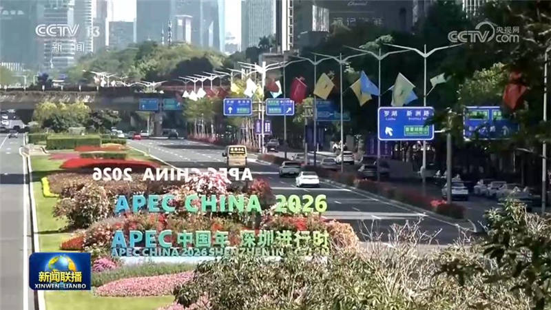
多国人士表示，中国始终维护多边贸易体制，践行真正的多边主义，APEC“中国年”启动以来，围绕“开放、创新、合作”三大优先领域不断取得新成果，相信即将举行的亚太经合组织第三十三次领导人非正式会议及相关活动将取得丰硕成果。
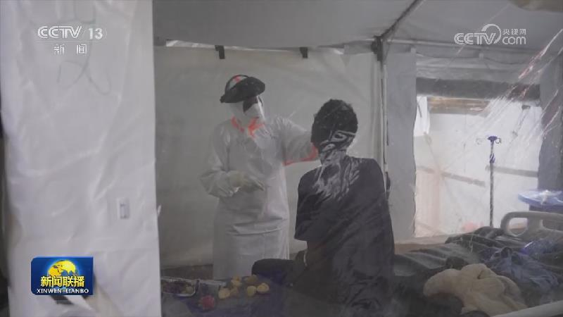
胡塞武装称控制也门西海岸地区